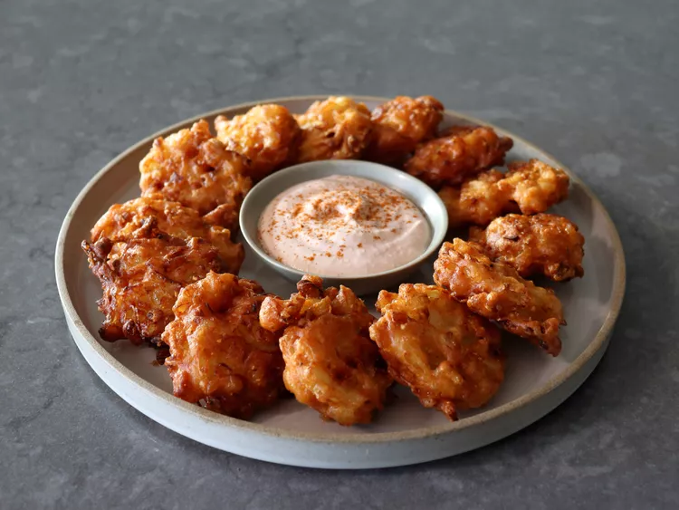

Awesome Blossom Onion Bites

Description
These awesome blossom onion bites are a great way to capture the magic of a fried blooming onion, and they are much easier to make than deep frying a whole onion at home. A recipe for the perfect dipping sauce is included. Salting the onions to remove excess moisture is optional, but highly recommended for the best texture and flavor.
Ingredients
- 2 cups diced onions
- 1 3/4 teaspoons kosher salt, divided
- 1/4 teaspoon freshly ground black pepper
- 1 pinch cayenne pepper
- 1/4 teaspoon garlic powder
- 1 tablespoon cornmeal
- 1/2 cup all-purpose flour
- 1/2 teaspoon baking powder
- 1/2 cup milk
- 2 cups vegetable oil, or as needed for frying
Steps
- Optional: add diced onion to a bowl, stir in 1 1/2 teaspoons kosher salt, cover the bowl, and let stand for 15 minutes to draw moisture out. Transfer onions to a strainer and rinse thoroughly under cold running water; let drain for about 5 minutes, then transfer onions to a dry bowl.
- To the bowl with diced onions, add remaining 1/4 teaspoon salt, black pepper, cayenne, garlic powder, cornmeal, flour, and baking powder, and stir to combine. Pour in milk; stir until a very thick batter forms. Let sit for 5 to 10 minutes before frying.
- Heat vegetable oil, 1/2-inch deep, in a heavy-duty skillet over medium-high heat to 350 degrees F (180 degrees C). Line a plate with paper towels.
- Drop batter by rounded tablespoons into the hot oil. Fry until nicely browned and crispy, about 3 minutes per side. Remove to the prepared plate to drain for a minute before serving. Fry onion bites in batches until all batter is used; cooked bites can be kept warm in the oven while you work.
Home